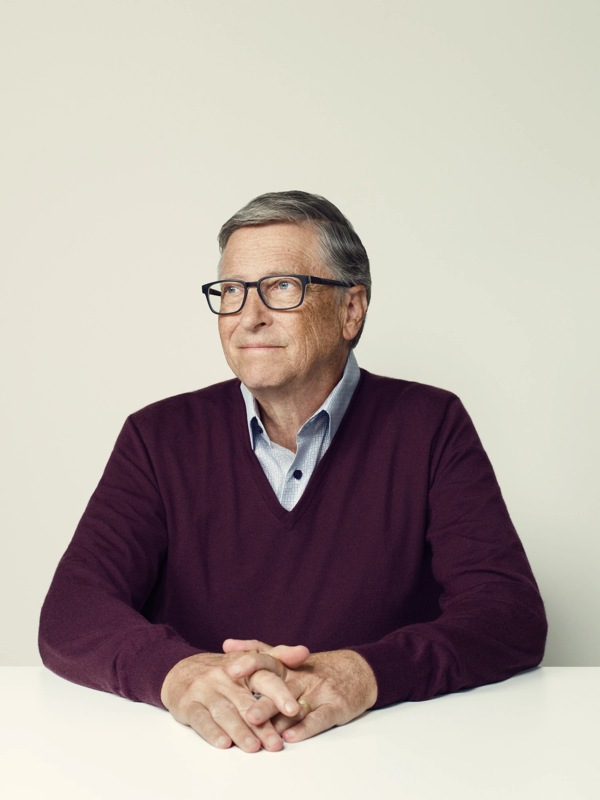
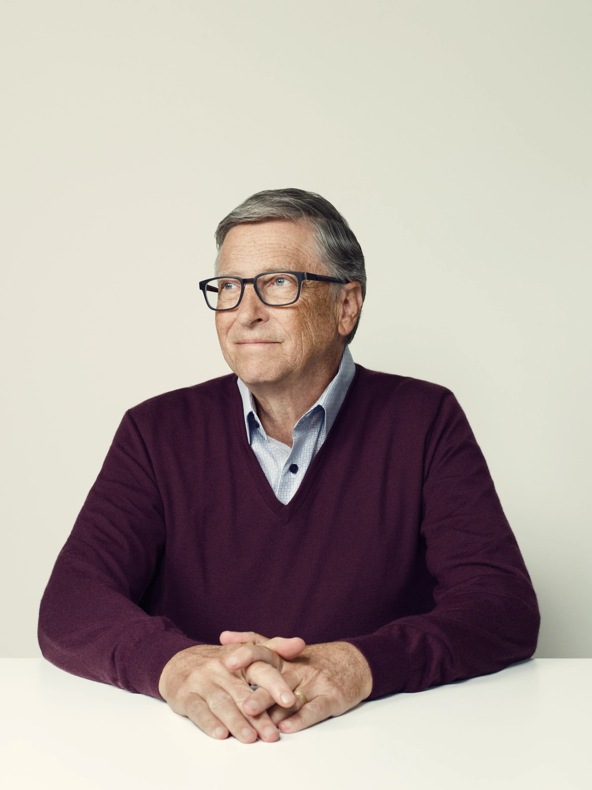

Biografía de Bill Gates
Sus Inicios
Bill Gates nació en una familia acomodada que le proporcionó una educación en centros de élite como la Escuela de Lakeside (1967-73) y la Universidad de Harvard (1973-77). Siempre en colaboración con su amigo Paul Allen, se introdujo en el mundo de la informática formando un pequeño equipo dedicado a la realización de programas que vendían a empresas o administraciones públicas. Cuando, en 1979, Microsoft comenzó a crecer (contaba entonces con dieciséis empleados), Bill Gates decidió trasladar su sede a Seattle.
Trayectoria Hacia el Éxito
A principios de la década de 1970, la invención del microprocesador permitió abaratar y reducir el tamaño de las gigantescas computadoras existentes hasta entonces. En 1977 empezaron a comercializar la segunda versión de su computadora personal, el Apple II, que se vendía con un sistema operativo también creado por Apple: un hito histórico que marca el nacimiento de la informática personal. En 1981, IBM pudo lanzar su primer PC (Personal Computer, ordenador personal). Con el lanzamiento en 1984 del ordenador personal Macintosh, Apple pareció tomar de nuevo la delantera. Entretanto, el negocio no había cesado de crecer (de los 1.200 empleados que tenía en 1986 hasta más de 20.000 en 1996), y, con la generalización de Windows, Bill Gates pasó a ejercer un virtual monopolio del mercado del software mundial, reforzado por su victoria en el pleito de 1993 contra Apple.
Bill Gates había contraído matrimonio en 1994 con Melinda French, con la que tendría tres hijos. En el año 2000 creó, junto con su esposa, la Fundación Bill y Melinda Gates. En 2014 la había encabezado ya en quince ocasiones como el hombre más rico del planeta. En 2008, Bill Gates abandonó definitivamente Microsoft para dedicarse íntegramente a sus labores en la fundación, que había recibido el Premio Príncipe de Asturias de Cooperación Internacional en 2006. Al igual que lo fue su empresa, su fundación es la más grande del mundo por lo que respecta a la cuantía de sus aportaciones económicas a toda clase de programas de ayuda, investigación y desarrollo.